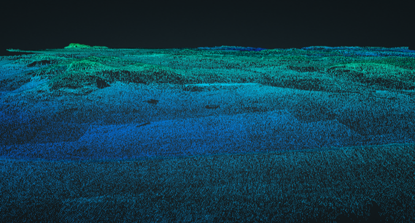

Forested development land
Review terrain early, before clearing, heavy field work, or detailed design.
When trees, brush, or uneven cover hide the terrain, LiDAR scanning gives you a better path to modelling the ground underneath.

Photogrammetry needs visible surface texture. In vegetated areas, that often means it models the canopy or brush instead of the terrain.
LiDAR provides multiple returns to work with, helping separate ground from vegetation and produce the thing most teams actually need: a usable bare-earth model.
Review terrain early, before clearing, heavy field work, or detailed design.
Find elevation changes, slopes, swales, and low areas across large uneven properties.
Evaluate long, vegetated, or hard-to-access routes with efficient aerial coverage.
Vegetated projects need careful scoping because the useful product is not the flight itself. It is the classified point cloud, bare-earth surface, contours, CAD-ready export, or report your team can use afterward.

Send the boundary, location, and a quick note about the cover. Drone Services Canada Inc. can help scope the right LiDAR approach.